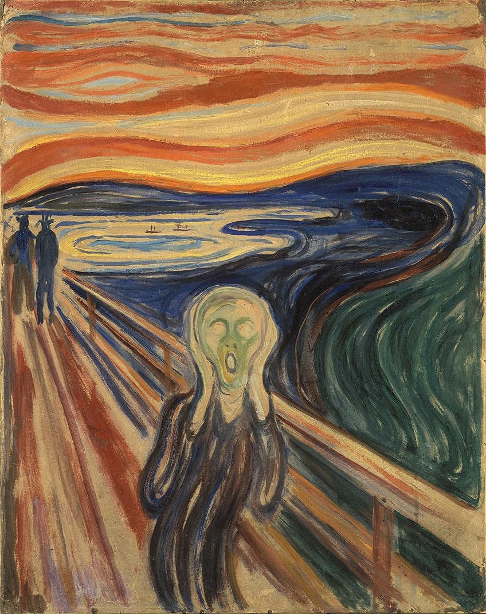
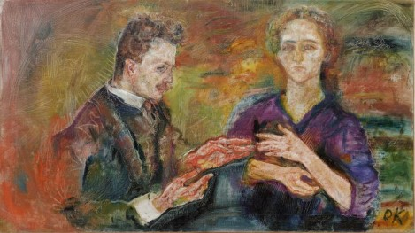
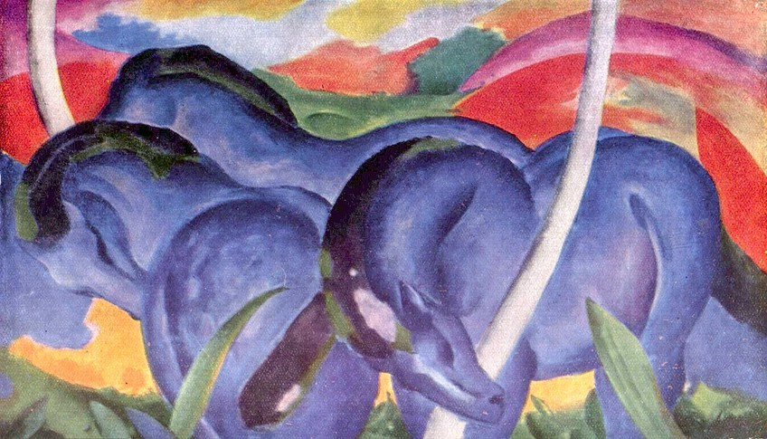
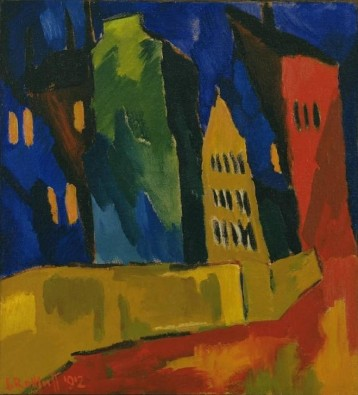
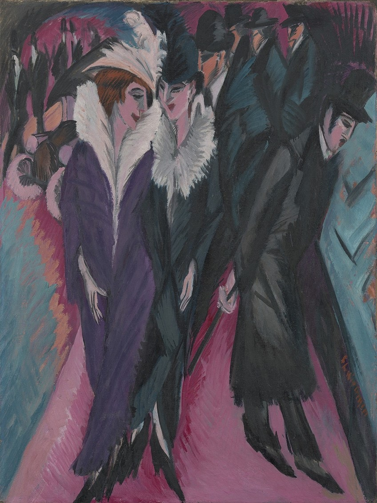
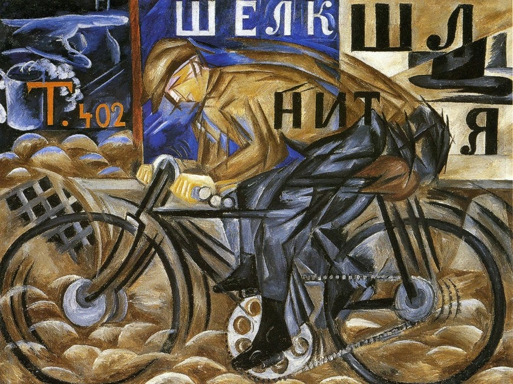
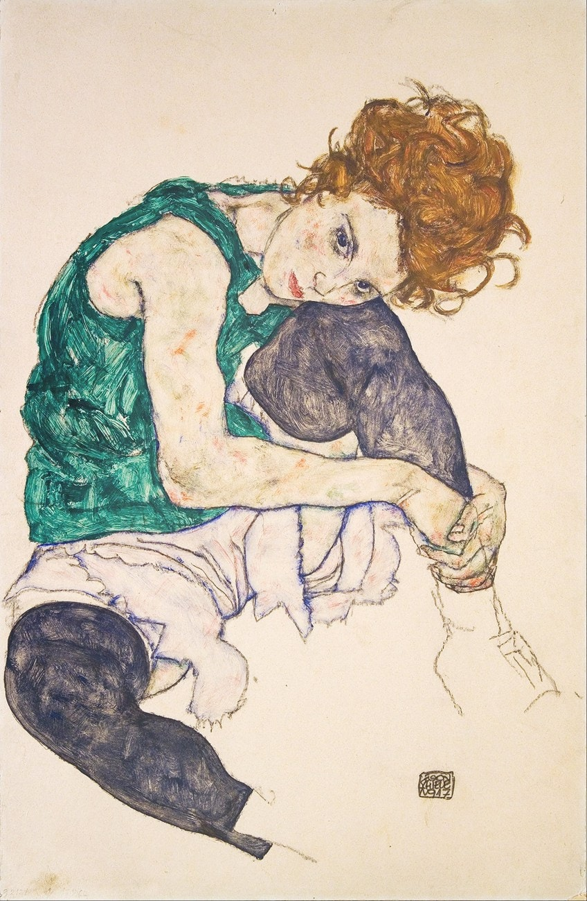
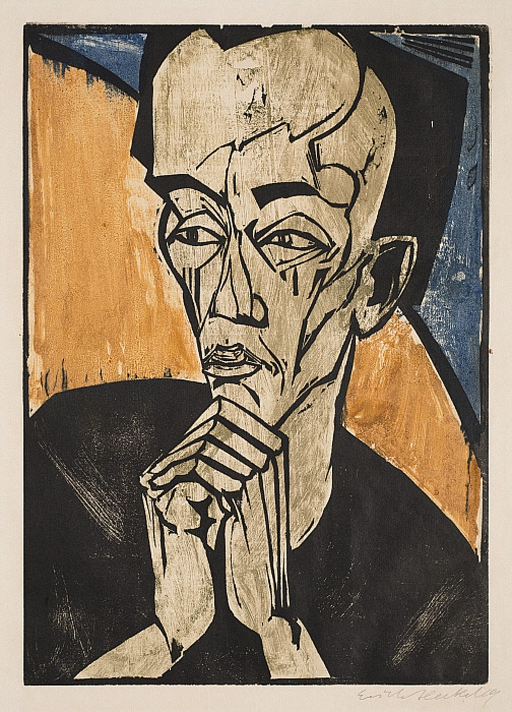
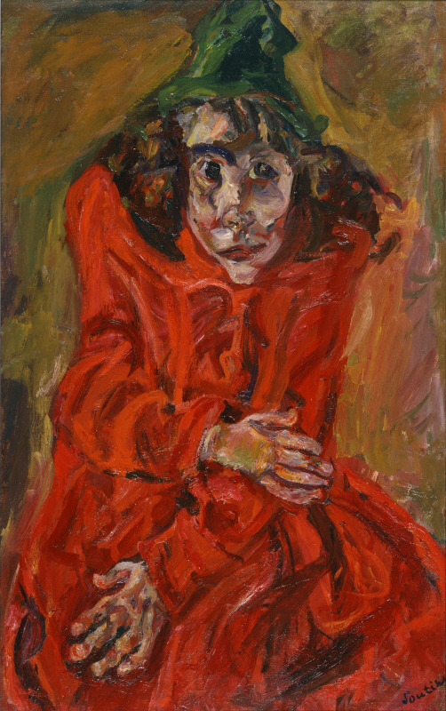
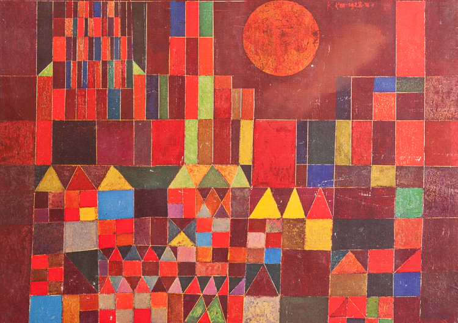

Artiştii expresionişti se foloseau de formele alungite şi exagerate, umplute de culori nenaturale. Aceştia doreau exprimarea stărilor sufleteşti cu ajutorul elementelor de limbaj. Elementele figurative devin nefireşti şi tragice.

Edvard Munch - The Scream

Oskar Kokoschka - Hans Tietze and Erica Tietze-Conrat

Franz Marc - Large Blue Horses

Karl Schmidt-Rottluff - Houses at Night

Ernst Ludwig Kirchner - Street, Berlin

Natalia Goncharova - The Cyclist

Egon Schiele - Sitting Woman with Legs Drawn Up

Erich Heckel - Portrait of a Man

Chaim Soutine - Mad Woman

Paul Klee - Castle and Sun